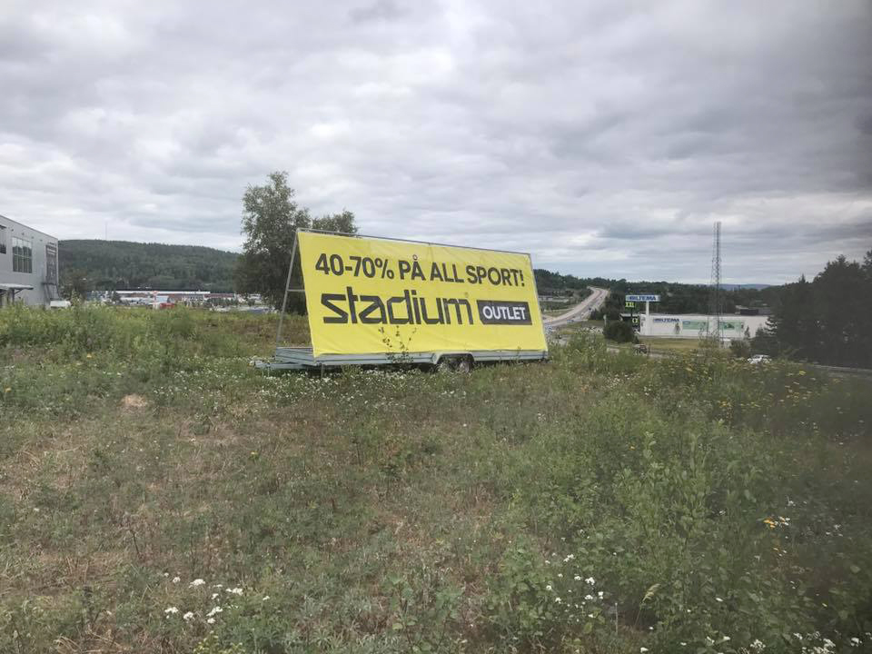
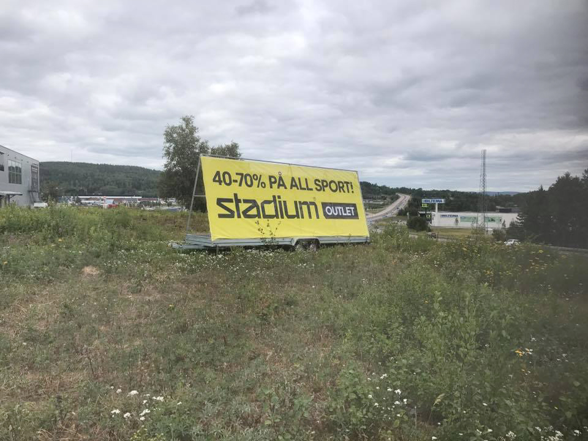

 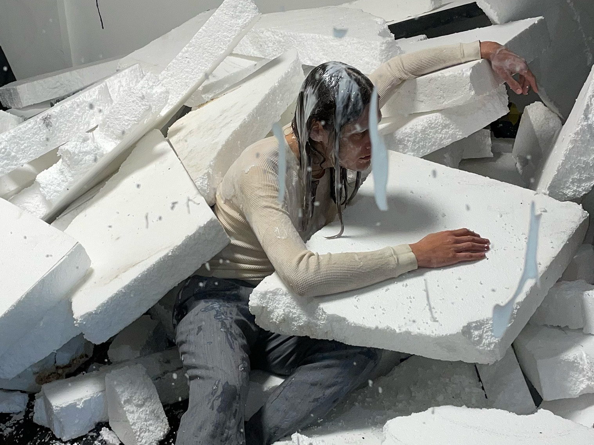
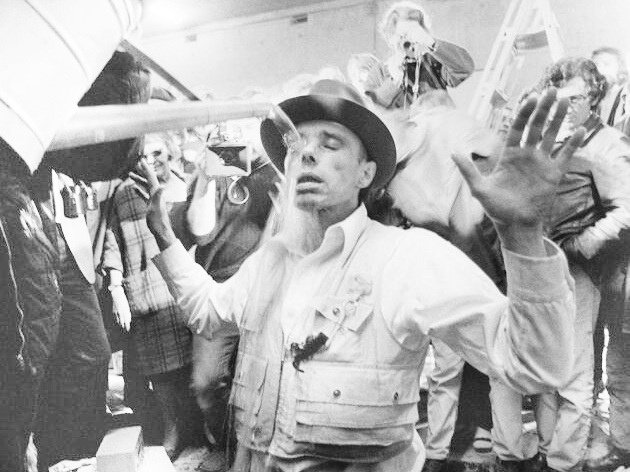
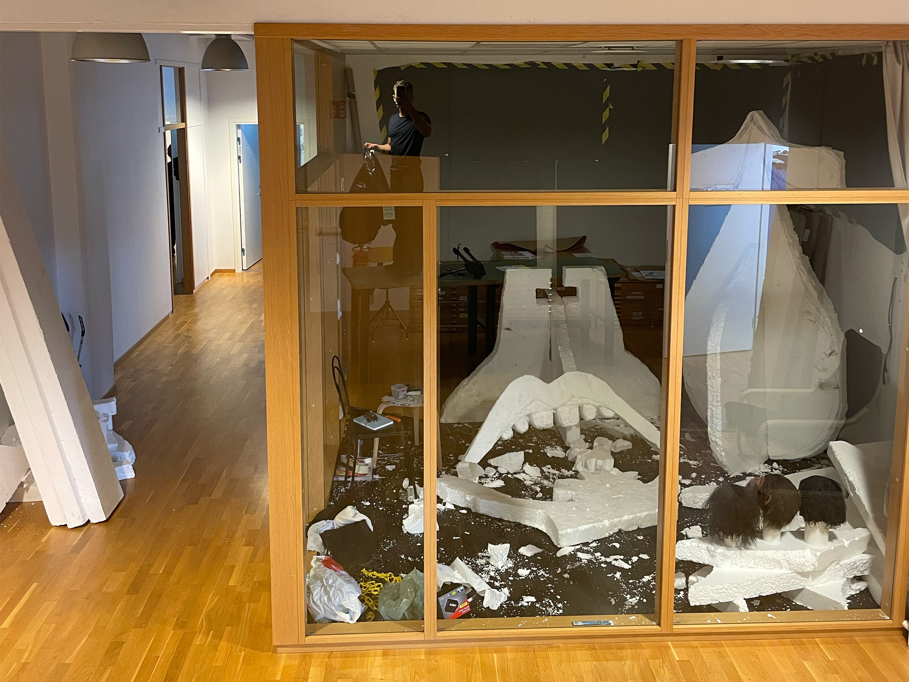
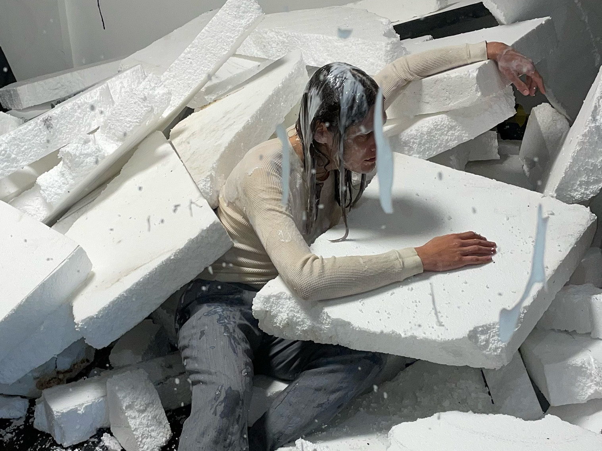
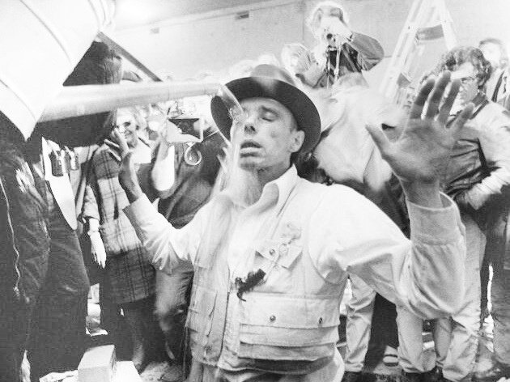
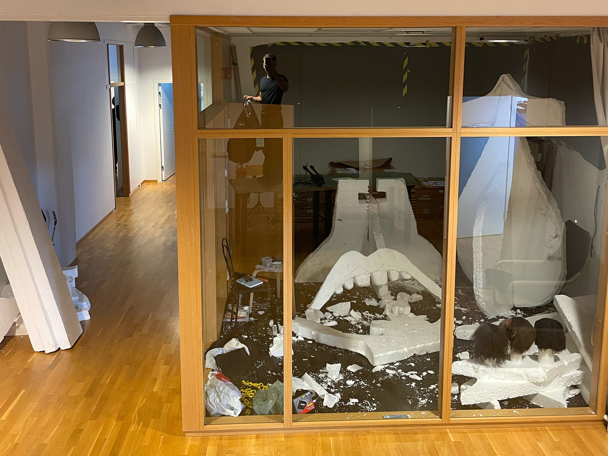

Wälkommen till
min portfololio!
Jag har ägnat rätt mycket tid åt att koka ihop saker de senaste åren, foto, film, 3D e.t.c!
Nu ska jag kort visa 2 projekt.
Projekt 1.
Vill du bli min annonsplats?
Foto,
arbetsprov till Beckmans.
Det är kul med Attention Economy.
Att det finns pengar i att bara kolla.
Isåfall finns det ju potentiella pengar i alla ytor som går att kolla på. Alltså exempelvis: en kaffekopp, en penna, en avklippt nagel, en nysning?
De dolda annonsytorna
är oändliga.
Jag ska måla hela världen lilla mamma. Men jag ska börja med något litet som jag har haft ögonen på länge: häst.
Efter lite övertalan fick jag tillgång till en bekant bondes häst. För att vara exakt: den isländska ponnyn Doud.
Att teckna mitt budskap på hennes kropp var inte det minst svåra som jag någonsin gjort. Både jag och Doud var lite nervösa. Men lagom till skymning hade vi båda lugnat ned oss och jag fick till sist min bild.
Projekt 2.
Parasitära Mutationstankar
Film 1 min,
projekt på Beckmans.
Jag har en grej för konst som är så seriös och högstämd och kryptisk att det blir parodiskt. Jag tycker det är vackert.
Samtidigt har jag viss förståelse för dem som vill strypa statliga bidrag till den typen av saker, de som tycker att all konst ska finansiera sig själv.
Jag ville blanda ihop de där två olika känslorna. En ohelig mutation utav de båda var det jag tänkte mig.
Med hjälp av jättemycket cellplast och jätteliten morakniv byggde jag upp mina kulisser i en möteslokal i skolan. Projektet var: på G.
En vänlig klasskamrat gick med på att utföra mitt oerhört krävande performance-konstverk.
Det var en one-take-situation eftersom att han enligt manus skulle riva kulisserna, och duscha i yoghurt.
Jag klippte in scenen i ett reklam-showroom vid Stureplan
(after effects)
Resultatet är ett högstämt performance som också
är reklam för en
probiotisk yoghurt.
Kryptisk kommersiell
mutation: check ☑
Det finns massor av saker
som jag vill prata om, hoppas vi
får chans att göra det!
Wälkommen till
min portfololio!
Jag ska visa 2 projekt.
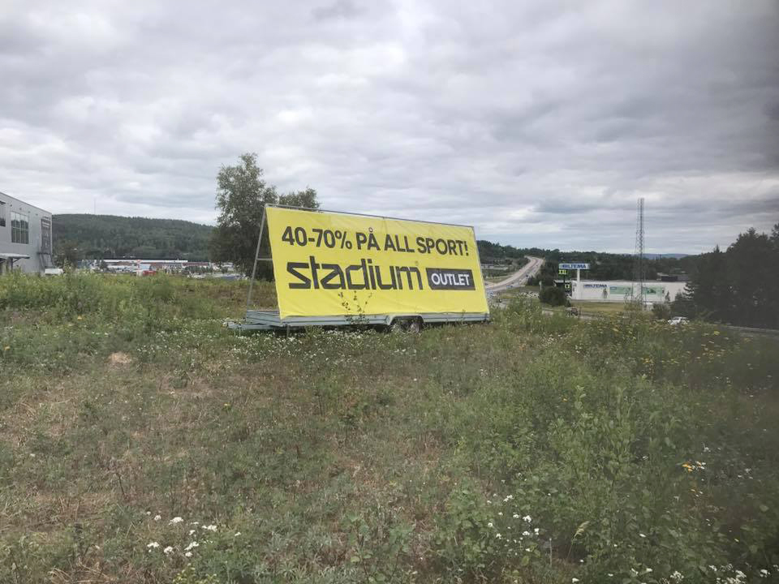
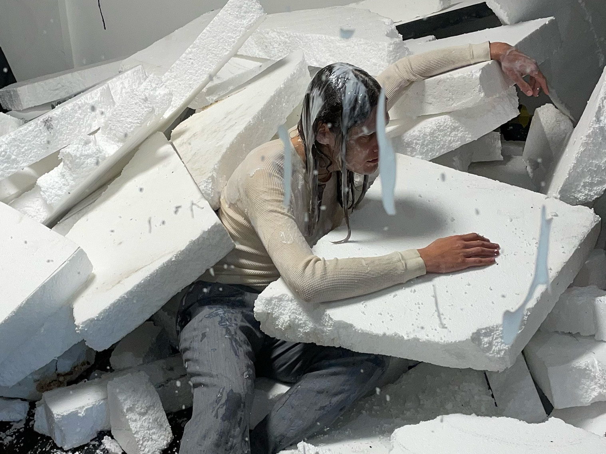
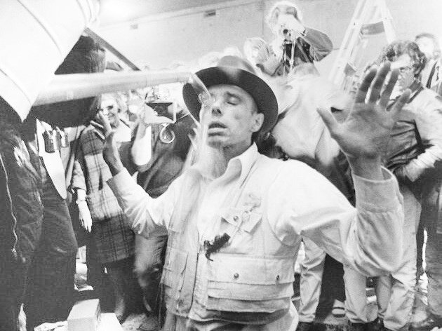
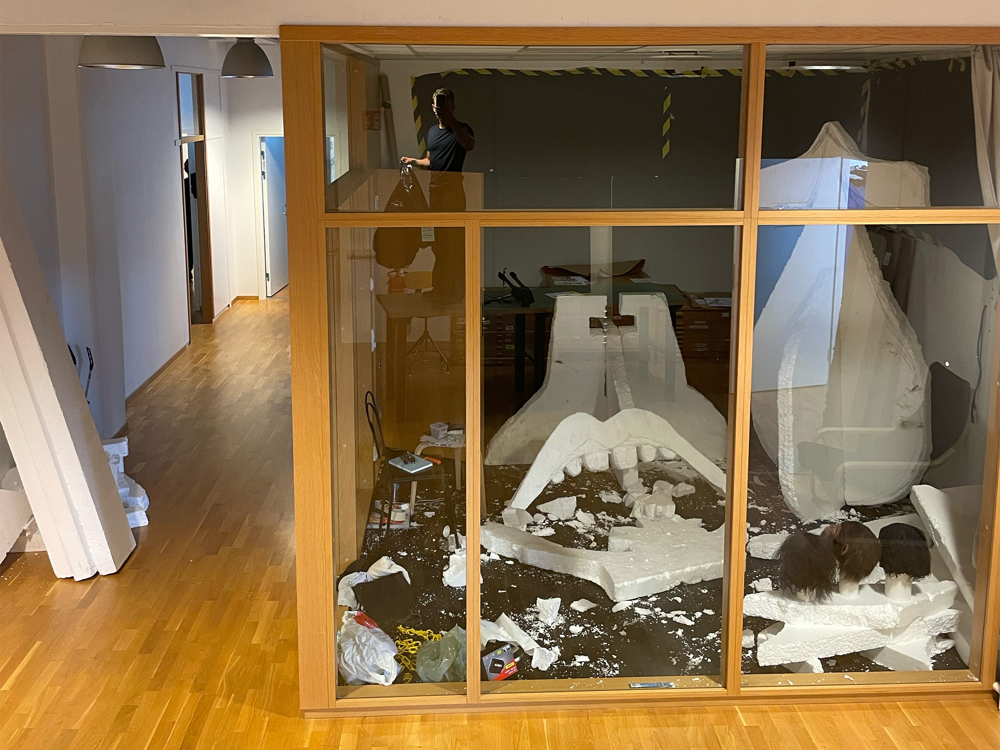